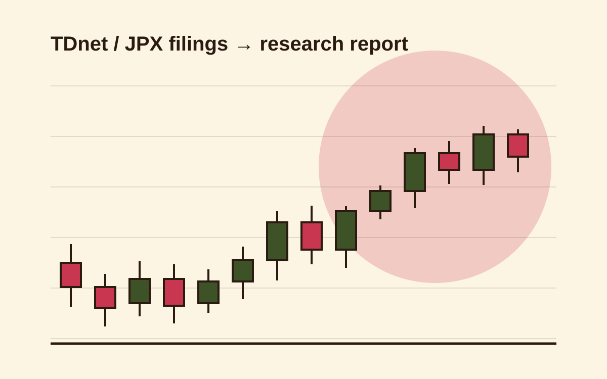

Japan Equity Research Pipeline
A 4-stage pipeline that scrapes same-day Tokyo Stock Exchange filings (TDnet/JPX) for 8 Japanese equity positions and reads the Japanese-language PDFs natively. Claude Haiku triages what's relevant and Claude Sonnet runs the deep thesis-impact analysis, cutting API cost about 3x. The result is an automated research report with per-position confidence scores and cross-position risk synthesis.